QtitanDataGrid Examples
After you install a trial or full version of QtitanDataGrid on your computer, you will find a number of demos in <QtitanDataGrid Install Path>/demos/grid folder that will demonstrate how QtitanDataGrid can be used in different situations and for different purposes. You can use snippets from these examples in your application.
- AddingNewRowFeature example demonstrates how user can enter a new row to the grid. New row can be located on top or bottom of the view.
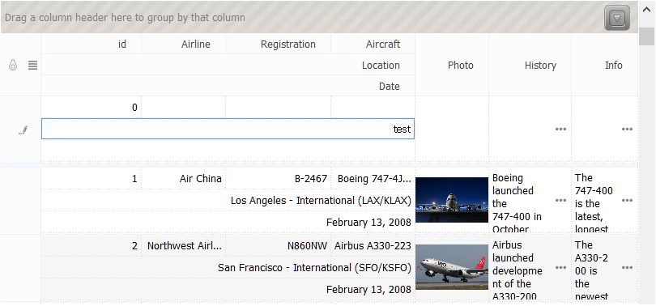
- BandedTableView example demonstrates how to organize multi-level column headers that are unites in bands.
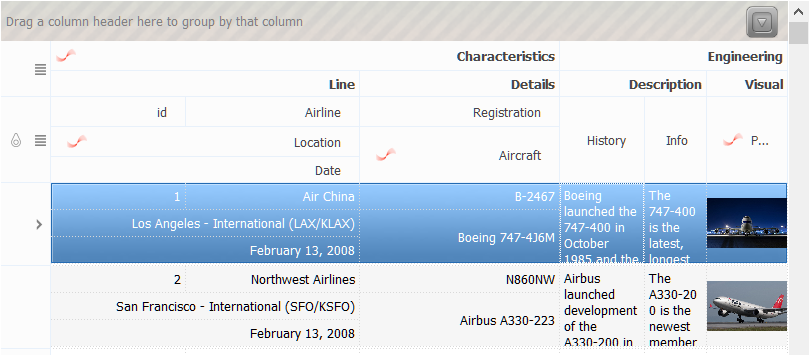
- FixedColumns example demonstrates how to column can be fixed (cannot be scrolled horizontally or verticaly in horizontal-oriented view) on the left or right side of the grid's view.
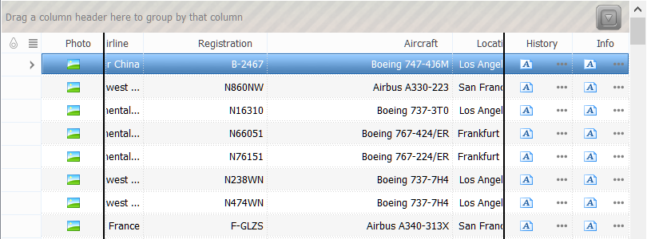
- LargeDataSetExample example demonstrates how to column the behavior of a grid with 100.000 rows loaded in it and the usability of grouping and sorting functions in this case.
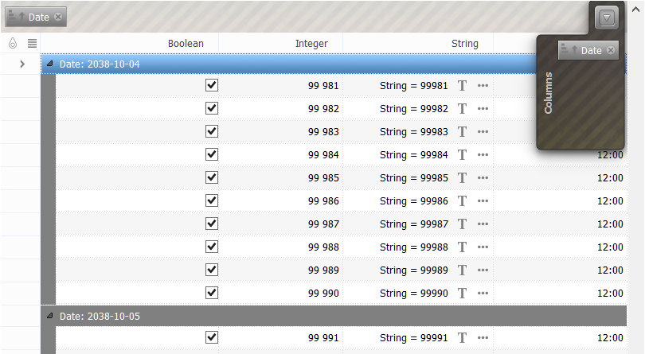
- ColumnEditorsFeature example demonstrates how QWidget can be embedded to the ordinal column header or to the band column header. In this demo we embed Chart QWidget from Qt-demos to the band column header.
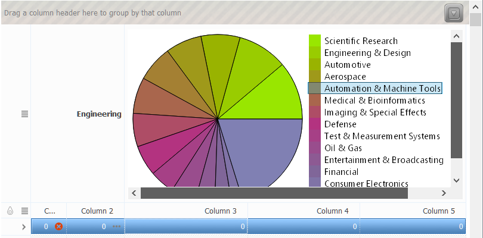
- CustomFilter example demonstrates how custom filter can be applied for data that are showing in grid. This demo is based on CustomFilterCondition class that can be adopted for your special conditions.
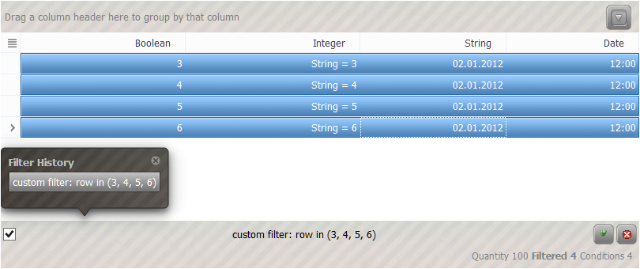
- DragDropFeature example demonstrates drag-drop support in grid.
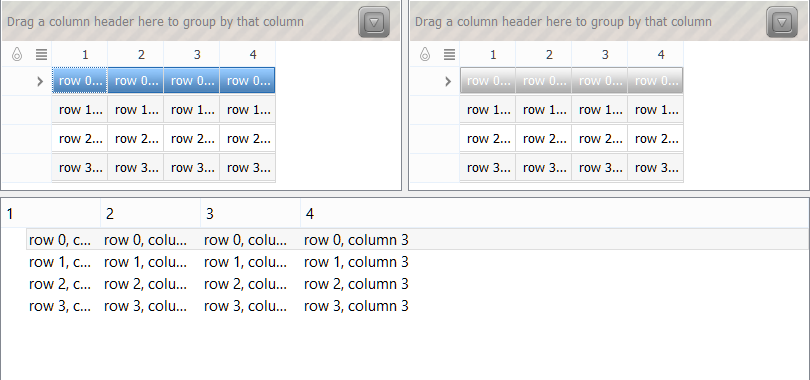
- RowAutoHeightFeature example demonstrates the ability of the grid to adjust the height of the rows according to theirs content to make it fit on the view. For alignment are used any multi-line text or images located in cells.
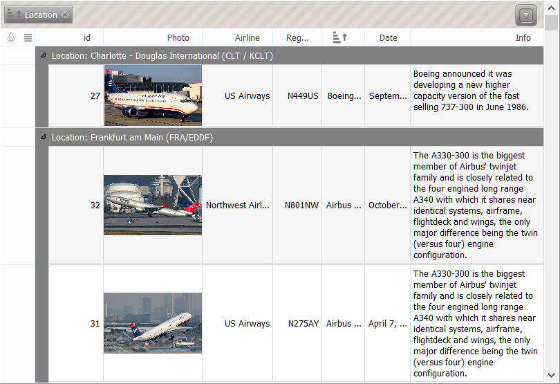
- GroupAndFooterSummaries example demonstrates how to correctly initialize the grid to make it display summaries by all columns or by groups.
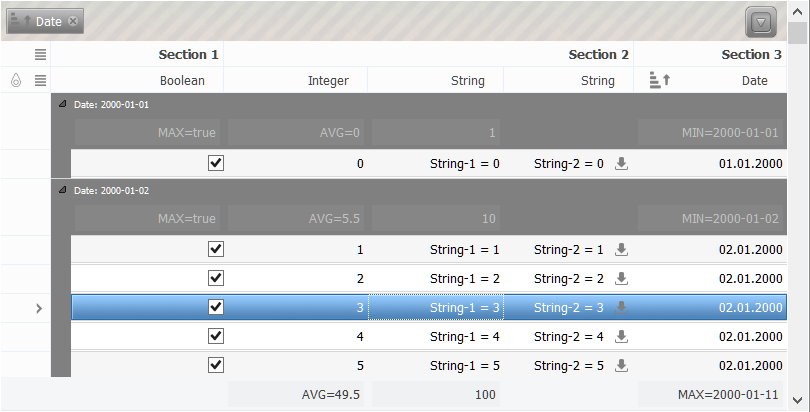
- ScrollingByPixelsFeature example demonstrates how to correctly initialize a grid to enable per-pixel vertical rows scrolling (or horizontal rows scrolling in horizontal-oriented view), similar to how it's done in web browsers.
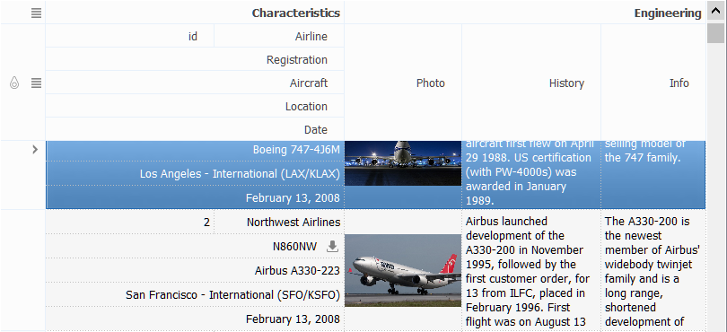
- HorizontalTableView example demonstrates horizontal layout usage in a grid view. Horizontal view orientation is effective when you have a database table that has many fields that are not fit on the screen.
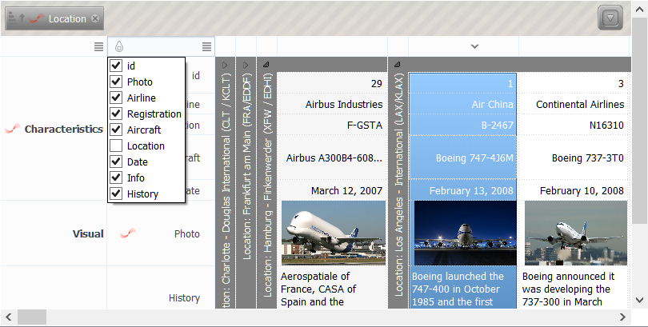
- HtmlManipulation example demonstrates how HTML can be used in various parts of the grid. HTML can contain a hyperlinks with a handlers (slots) in your code.
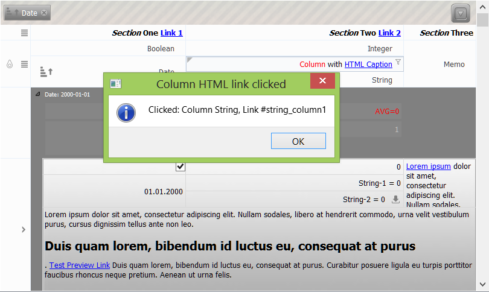
- MSOfficeMode example demonstrates grid behaviour like in Microsoft Office. Grouping and group rows painting like in Outlook.

- MultiSelection example demonstrates the operation of the grid in various modes of the selection. You can choose from single-row, multi-rows, single-cell, multi-cells, multi-rows with rubber band and multi-cells with rubber band selection modes. In multiline mode you can mark the rows by clicking on a check boxes.
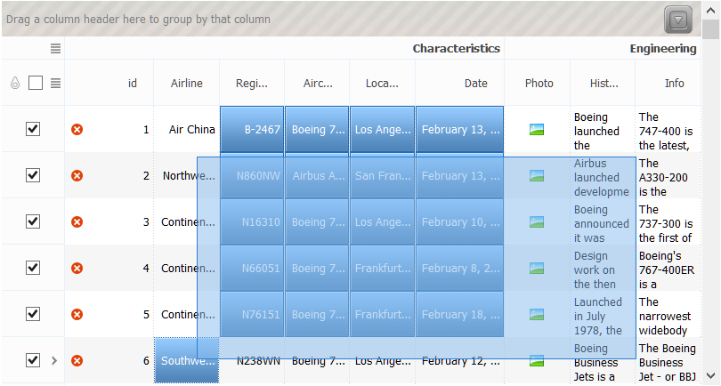
- PreviewRow example demonstrates how to correctly initialize a grid preview row. Preview row it is a special row that does not have a column header and it is designed to display generalized information reflected in other cells.
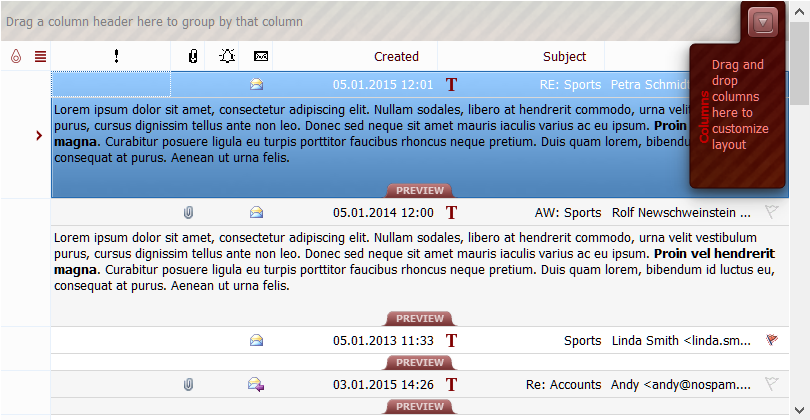
- ProgressBarEditor example demonstrates progress bar cell editor behaviour. Grid allows to display and edit integer value in progress bar.
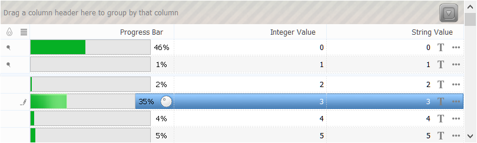
- RelationMode example demonstrates how to correctly initialize a grid to work with two relative Qt-models. Example repeats functionality of a analogous demo examples of Qt.
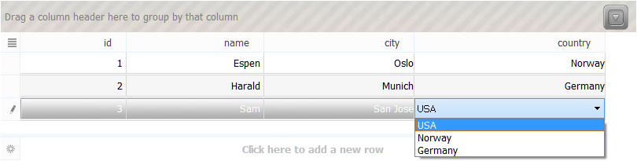
- RelationMode example demonstrates how to embed a Qt delegate from QTableView to QtitanDataGrid.
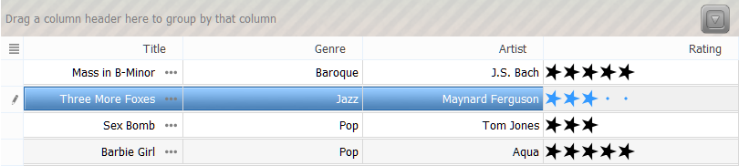